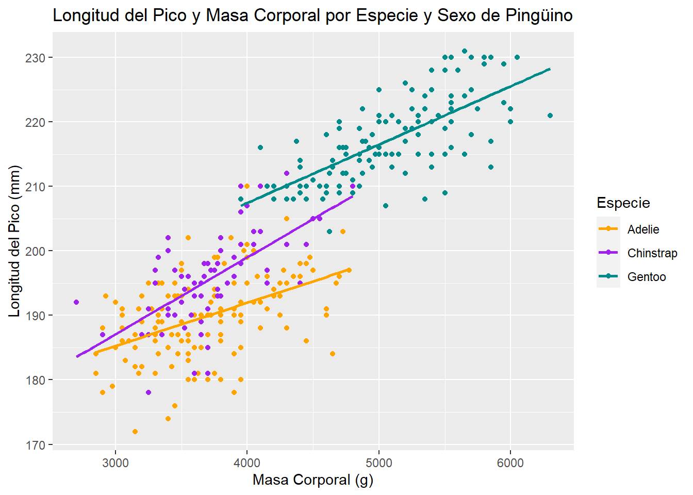
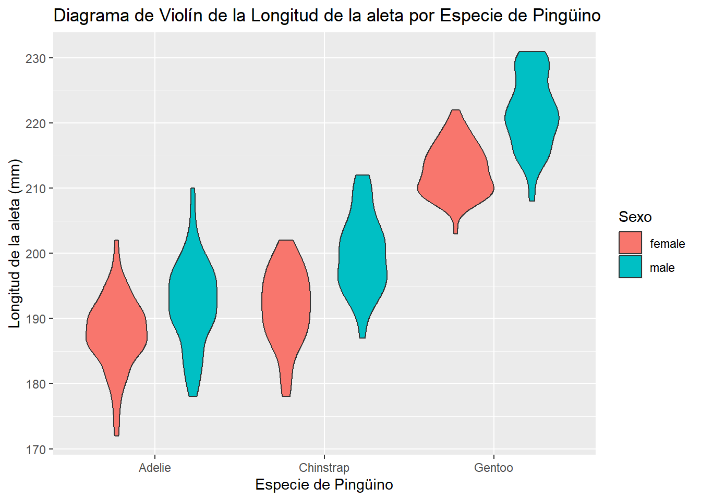

install.packages("palmerpenguins")
install.packages("ggplot2")
install.packages("stat_binhex")
install.packages("corrplot")Entrega 1
Instalamos los paquetes que vamos a necesitar:
Exploración inicial y descripción de variables.
En primer lugar, visualizaremos el conjunto de datos.
library(palmerpenguins)
str(penguins)tibble[,8] [344 x 8] (S3: tbl_df/tbl/data.frame)
$ species : Factor w/ 3 levels "Adelie","Chinstrap",..: 1 1 1 1 1 1 1 1 1 1 ...
$ island : Factor w/ 3 levels "Biscoe","Dream",..: 3 3 3 3 3 3 3 3 3 3 ...
$ bill_length_mm : num [1:344] 39.1 39.5 40.3 NA 36.7 39.3 38.9 39.2 34.1 42 ...
$ bill_depth_mm : num [1:344] 18.7 17.4 18 NA 19.3 20.6 17.8 19.6 18.1 20.2 ...
$ flipper_length_mm: int [1:344] 181 186 195 NA 193 190 181 195 193 190 ...
$ body_mass_g : int [1:344] 3750 3800 3250 NA 3450 3650 3625 4675 3475 4250 ...
$ sex : Factor w/ 2 levels "female","male": 2 1 1 NA 1 2 1 2 NA NA ...
$ year : int [1:344] 2007 2007 2007 2007 2007 2007 2007 2007 2007 2007 ...Vemos que hay 344 observaciones de 8 variables:
- Especie, cualitativa nominal politómica.
- Isla, cualitativa nominal politómica.
- Longitud del pico (en milímetros), cuantitativa continua (discretizada a \(10^{-4}\) metros).
- Profundidad del pico (en milímetros), cuantitativa continua (discretizada a \(10^{-4}\) metros).
- Longitud de la aleta (en milímetros), cuantitativa continua (discretizada a los milímetros).
- Peso (en gramos), cuantitativa continua (discretizada a los múltiplos de \(5\) gramos).
- Sexo, cualitativa nominal dicotómica.
- Año,
La unidad muestral de la tabla es un pingüino. Para comprobar que las variables están discretizadas a las unidades que afirmamos, sencillamente hemos observado a qué unidad están redondeadas, y para la variable de peso, hemos utilizado la siguiente instrucción:
pesos=na.omit(penguins$body_mass_g)
sum(pesos%%5)[1] 0Deducimos que no hay ningún dato que no sea múltiplo de 5 (si hubiese alguno, la suma sería \(>0\)).
library(ggplot2)
species_colors = c("orange", "purple", "darkcyan")Veamos en qué islas habitan principalmente las tres especies:
p <- ggplot(penguins, aes(fill=island, x=species)) +
geom_bar()
print(p)
Tenemos que la especie Gentoo se encuentra únicamente en la isla Biscoe y Chinstrap está sólo en Dream. Por otra parte, Adelie se puede encontrar en las tres islas y es la que tiene una mayor población de pingüinos.
# Crea un objeto ggplot
p <- ggplot(penguins, aes(x = penguins$species, y = penguins$bill_length_mm)) +
geom_boxplot() +
labs(x = "Especie de Pingüino", y = "Longitud del Pico (mm)",
title = "Longitud del Pico por Especie de Pingüino")
print(p)
p <- ggplot(penguins, aes(x = penguins$bill_length_mm, y = penguins$flipper_length_mm, color = species)) +
geom_point() +
labs(x = "Longitud del Pico (mm)", y = "Longitud de la Aleta (mm)",
title = "Longitud del Pico vs. Longitud de la Aleta por Especie de Pingüino") +
scale_color_manual(values=species_colors)
print(p)p <- ggplot(penguins, aes(x = species)) +
geom_bar() +
labs(x = "Especie de Pingüino", y = "Frecuencia",
title = "Gráfico de Barras de la Distribución de Especies")
print(p)
p <- ggplot(penguins, aes(x = species, y = flipper_length_mm, fill = species)) +
geom_violin() +
labs(x = "Especie de Pingüino", y = "Longitud de la Aleta (mm)",
title = "Diagrama de Violín de la Longitud de la Aleta por Especie de Pingüino") +
scale_fill_brewer(palette = "Dark2")
print(p)
p <- ggplot(penguins, aes(x = year, y = flipper_length_mm, color = species)) +
geom_line() +
labs(x = "Año", y = "Longitud de la Aleta (mm)",
title = "Evolución de la Longitud de la Aleta por Especie de Pingüino")
print(p)
p <- ggplot(penguins, aes(x = species, y = flipper_length_mm, fill = sex)) +
geom_bar(stat = "identity", position = "stack") +
labs(x = "Especie de Pingüino", y = "Longitud de la Aleta (mm)",
title = "Gráfico de Barras Apiladas de la Longitud de la Aleta por Género") +
scale_fill_brewer(palette = "Set3")
print(p)
p <- ggplot(penguins, aes(x = bill_length_mm, y = flipper_length_mm)) +
geom_hex() +
labs(x = "Longitud del Pico (mm)", y = "Longitud de la Aleta (mm)",
title = "Dispersión de la Longitud del Pico y de la Aleta")
print(p)
p <- ggplot(penguins, aes(x = "", fill = sex)) +
geom_bar(width = 1) +
coord_polar(theta = "y") +
facet_wrap(~species) +
labs(x = NULL, y = NULL,
title = " Proporción de Género por Especie de Pingüino") +
theme_void() +
scale_fill_brewer(palette = "Set2")
print(p)
p <- ggplot(penguins, aes(x = bill_length_mm, y = body_mass_g)) +
geom_point(aes(color = species)) +
geom_smooth(method = "lm", se = FALSE, color = "black") +
labs(x = "Longitud del Pico (mm)", y = "Masa Corporal (g)",
title = "Longitud del Pico y Masa Corporal por Especie de Pingüino") +
scale_color_brewer(palette = "Set2")
print(p)
p <- ggplot(penguins, aes(x = bill_length_mm, y = bill_depth_mm, color = species)) +
geom_point() +
geom_smooth(method = "lm", se = FALSE) +
labs(x = "Longitud del Pico (mm)", y = "Profundidad del Pico (mm)",
title = "Dimensiones del Pico por Especie de Pingüino") +
scale_color_brewer(palette = "Set2")
print(p)
library(ggplot2)
p <- ggplot(penguins, aes(x = flipper_length_mm, y = body_mass_g, size = bill_length_mm, color = species)) +
geom_point(alpha = 0.7) +
scale_size_continuous(range = c(3, 10)) +
labs(x = "Longitud de la Aleta (mm)", y = "Peso Corporal (g)",
title = "Longitud de Aleta vs. Peso Corporal vs. Tamaño del Pico por Especie de Pingüino")
print(p)